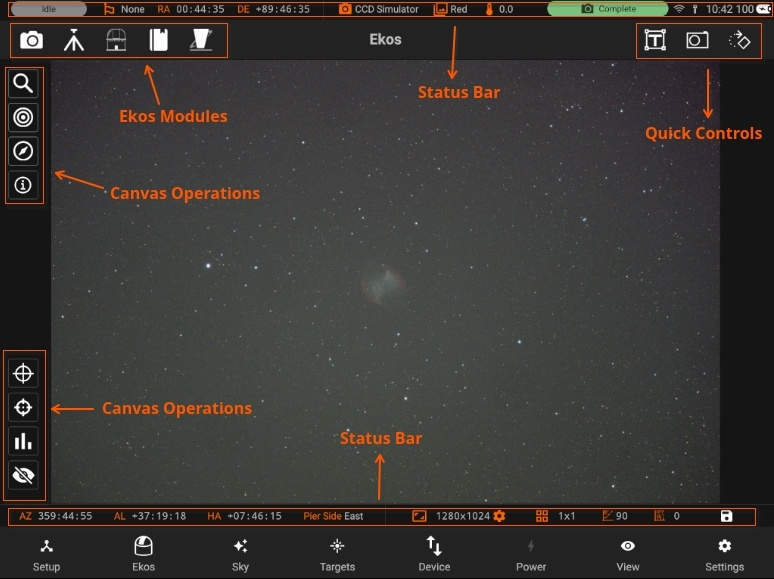
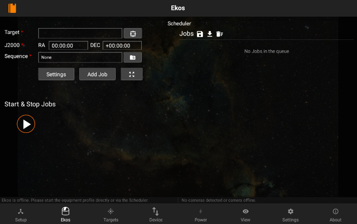
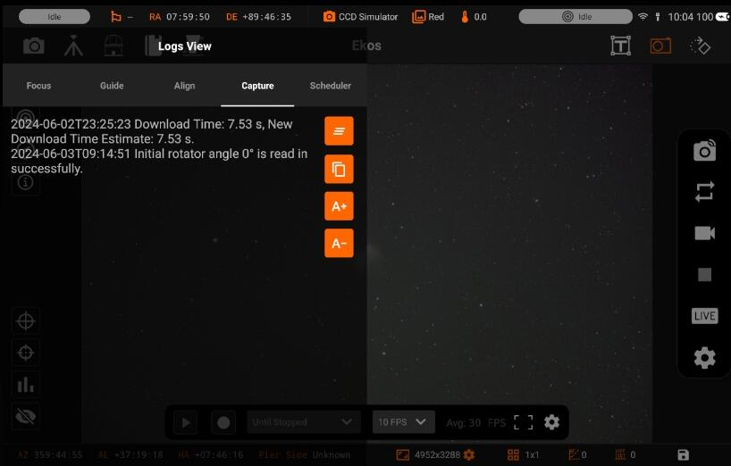
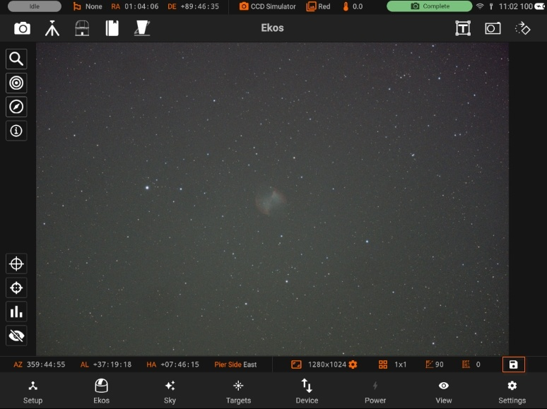

Ekos
Ekos is where all the astrophotography workflow takes place.You can control all your equipment, run sequences, and automate your workflow with the scheduler.
It is divided into different sections to facilitate access.

- Main Canvas: Displays the captured images.
- Canvas Operations: Control image histogram, toggle overlays, or display the summary view. Includes Advanced controls for Focusing, Guiding, Alignment
- Ekos Modules: Capture, Mount, Observatory, Scheduler, and INDI Control Panel.
- Quick Controls: Quick access to Camera, Mount, and Rotator (if available) operations. With Camera quick controls, you can capture previews, videos, and toggle live stacking. Mount quick control provides mount speed & directional controls in addition to tracking, goto, and parking operations.
- Status Bar: Divided to Mount and Camera status bars to display current status and any relevant information. Two status bars. One on top and one at the bottom. Also includes Device Battery level, WiF, Ethernet status and a badge with shows overall Status of modules whether Capurting, Aligning etc.
Ekos modules and Quick Controls are only available after an equipment profile is started in the Setup screen. However, if no equipment profile is started, you still have access to the Scheduler module as it can be used to schedule your targets and command startup and shutdown of equipment automatically. From the scheduler, you may select targets and sequences to create jobs. Job constraints impose conditions that must be met. Once the scheduler is running, it will select the best targets for imaging and would automate the rest of the workflow without any operator intervention.

When an equipment profile is started, the Ekos modules are activated:

- Focus: Focus your camera either automatically via an electronic focuser, or manually by adjusting the focus while framing, or by using Bahtinov Mask Assistant. Create presets for different configurations and set advanced settings to control the star detection and focusing algorithms.
- Align: Align your mount to get highly accurate GOTOs and to ensure you target is always in the center. You can also load an existing image to plate solve and then command the mount to go to the exact center in the sky. Perform Polar Alignment to ensure sharp images for long-exposure astrophotography.
- Guide: Guiding enables long-exposure astrophotography by ensuring your mount tracks accurately with time. It can automatically select and lock a guide star and send correction pulses to the mount to keep it always centered.
- Capture: Manage capture presets and jobs. Run sequences, adjust filter offsets, and manage your dark library.
- Mount: Manage Meridian Flip & Limit settings.
- Observatory: Control Dome or Roll-off observatories. Command mechanized Dust Caps.
- Scheduler: Select targets and specify startup conditions and constrains, then let Ekos manage the rest.
- INDI Control Panel: Direct access to all INDI devices and their properties.
Quick Controls are simplified quick-access settings for the camera, mount, and rotator located on the top-right panel. They can be toggled at any time. Once toggled, the corresponding control is overlayed on the top of your existing view where you can quickly and efficiently control your devices.
Logs
Swipe Right for quick access to Ekos logs. All Ekos logs are now consolidated in an easy to access view. Simply swipe right from the edge of the left screen to show the logs. Depending on which module you are currently using, the active logs would be displayed.

You can also:
- Clear the logs
- Copy the logs text
- Increase/Decrease font size
Save Images:
You can also save the captured image to your Phone/Tablet by pressing the "Save" icon at bottom right.
